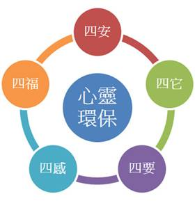

|
【四安】
提昇人品的主張：安心、安身、安家、安業
安心－在於少欲
少欲知足，就不會有強烈的欲望而貪得無厭，就能夠安自己的心了。自己安心之後，就可以發起悲願來福利眾生，為他人謀求福利，安他人的心。
安身－在於勤儉
勤勞努力除了讓身體健康、心裡平安，還多半會得到物質的報酬，但是有了物質的報酬，必須節制地使用，否則為了享受物慾，對身心又會產生不健康的行為。所以「勤勞」、「節儉」這兩個原則是身體健康的秘訣。
安家－在於敬愛
安家的要領是互相尊敬、互相學習、互相體諒、彼此關懷、彼此感恩、彼此奉獻。光在物質上把自己的家安頓好，不算是真正的安家；真正的安家，是要使得家中的每一個人，都能各盡其力，各守其分。
安業－在於廉正
一般人所講的安業，是指對他自己的職業、工作，要有安定和保障。可是若以身口意三類行為的清淨與精進為範圍，便已經將個人行為，以及工作都包含在內了。對自己的任何行為，都應以「利人便是利己」的觀點來考量，不論在家中、在公司，乃至在任何場合，如果都能夠用這樣的心態來面對，相信你就會很有人緣，也會很得人心。
【四要】
安定人心的主張：需要的不多，想要的太多；能要該要的才要，不能要不該要的絕對不要
要的不多，想要的太多
「需要」是什麼？就是少了它就不能活，例如：陽光、空氣、水分、起碼的食物、禦寒的衣服，避風遮雨的房子，在我們這個時代，基本的交通工具、電腦、電話也成為需要的，有這些必需品並不算是欲望。
生命中真正需要的東西並不多，只是從主觀的立場看，才覺得沒有了他生命很空虛、很無奈，覺得活的沒有意義，這純粹是個人的價值判斷。所以，如果只是講「需要」，定義非常模糊，在衡量「需要」與「想要」間的差異時，應該分別從自我觀點，以及總體客觀的立場同時來考量。
能不能要？該不該要？
「能要」的意思是說，在個人能力範圍許可下，以努力付出而獲得所需要的東西，但若能力不足，就該讓賢，不必強求。如果付出不夠多，能力、因緣皆不具足，還希望能得到它，這便是貪圖非分，只會增加痛苦與傷害。
現代人需要的東西不多，想要的東西太多；不應該要的，不能夠要的也要，結果想要的得不到，便會導致人心不安定，社會問題叢生。其實，在我們的日常生活中，需要的東西並不多，想要的東西非常多；需要的東西應該要，想要的東西不重要。

【四它】
解決困境的主張：面對它、接受它、處理它、放下它
都有它一定的原因，唯有面對它、改善它，才是最直接、最要緊的。
接受它
因果必須配合因緣，對於任何情況，如果能夠改善它，當即予以改善，若不能改善，便面對它、接受它，絕不逃避，但是要盡力改善。
處理它
如果計劃好的事在過程中發生問題，不必傷心也不必失望，應該繼續努力，促成因緣，還是有成功的機會。
放下它
如果經過詳細的考慮，判斷因緣不可能促成，那也只好放下它，這和未經努力就放棄，是截然不同的。
【四感】
與人相處的主張：感恩、感謝、感化、感動
感恩—奉獻、回饋不求報
隨時隨地心存感恩，以財力、體力、智慧、心力來做一切的奉獻。奉獻的時候，態度是恭敬的，而不是以施捨心來付出，否則便會自以為是施恩者，一心期待對方回饋。相反地，接受布施或服務的人，要把對方當成恩人，感謝其恩德。也就是一方以感恩的心奉獻，另一方以感恩的心來接受。
感謝—順境、逆境皆恩人
以感謝的心來接受順、逆兩種助緣。助我們一臂之力的是貴人，理當感謝；而以逆境激勵我們成長的，也是貴人，也應該感謝。事實上，我們應該把所有我們遇到、見到的每個人都當做貴人、當成恩人，都是有利於我們的人，心中便能常保平安。
感化—知慚愧、常懺悔、以慈悲智慧感化自己
佛法是來幫助我們修行的，不是拿來度量人的。感化自己就是要知慚愧、常懺悔。慚愧是因為自己做得不夠好，希望能夠做得更好、更努力；懺悔是因為知道自己有做錯的地方，提醒以後不要再犯錯。
感動—從自己做起，以學佛所得悲智感動他人
這個世界需要佛法，自己實踐佛法是最可靠的，希望人家做到是不容易的。如果大家都能用智慧來處理事、以慈悲來對待人，自然能夠產生力量感動他人。
【四福】
增進福祉的主張：知福、惜福、培福、種福
知福—知足常樂，安貧樂道
知道自己有福報是很重要的。人活在世上，最起碼都還有一口呼吸，有呼吸就等於擁有一切希望，人生充滿一切的可能。
如果我們能夠知福，就能知足，知足就能常樂。不過知足並不等於什麼都不要，而是「多也好，少也好，好到皆大歡喜」，這才是真正的知足。
惜福—珍惜擁有，感恩圖報
惜福，就是要珍惜我們所擁有的，包括健康資源、自然資源、社會資源等一切資源。珍惜而不浪費、不糟蹋，尤其不要糟蹋身體，不要傷害名譽、品格，甚至理念、理想，進一步還要飲水思源、感恩圖報，這就是惜福。
培福—享福非福，培福有福
培福就如同把今生得到的福報，種到田裡邊，它就可以長出更多、更多的福來。如果能應用佛法觀念，福報享盡了，緊接著就是苦報的降臨。如果我們現在能把握機會，無視於辛苦，不計較侮辱，且又能幫助別人解決苦難，更不為自己的名聞利養，努力求進步，盡自己所能，奉獻給需要幫助的人，實際上這就是在求福、培福。
種福—成長自己，廣種福田
釋迦牟尼佛告訴我們，人來到這個世界上，就是要來種福田的，每個人都有自己的福田可種，例如自己的家人、鄰居，以及社會上沒有親人照顧的窮人、病人，還有社會、國家的利益和一切眾生的幸福，都是我們的福田
知道要隨時隨地種福的人，是有福的人；為了要種福，必需要努力成長自己，在知識、人格、智慧，以及技能各方面都要增長，才能有更多的資源來種福田。 |